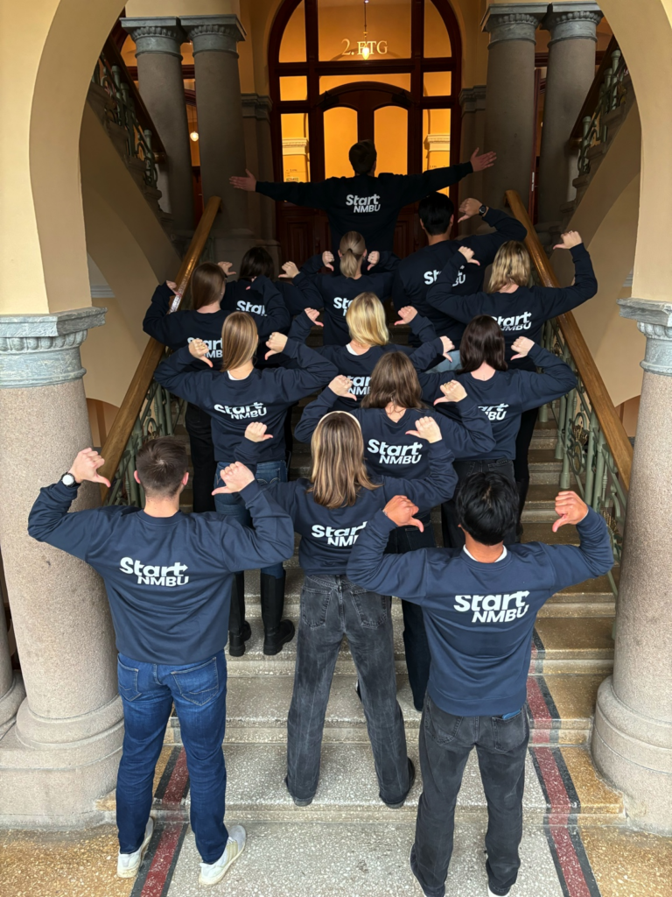

Arrangementer
Vi arrangerer foredrag, workshops og nettverksarrangementer i samarbeid med næringsliv og akademia, åpne for studenter som ønsker å lære og engasjere seg.

Start NMBU bidrar til å bygge en kultur for innovasjon og entreprenørskap blant studenter ved NMBU. Vi fungerer som et bindeledd mellom studenter, næringsliv og akademia, og skaper arenaer hvor ideer kan utvikles, deles og realiseres.
Vi arrangerer foredrag, workshops og nettverksarrangementer i samarbeid med næringsliv og akademia, åpne for studenter som ønsker å lære og engasjere seg.
Start NMBU er et inkluderende og sosialt fellesskap hvor studenter med felles interesser møtes, deler erfaringer og bygger relasjoner på tvers av studieretninger.
Gjennom erfaring, kunnskap og nettverk gir vi våre medlemmer og studenter verktøyene de trenger for å lykkes i fremtidens arbeidsliv.
Vi styrker fremtidens innovatører og entreprenører.
Sammen bygger vi et fellesskap for innovasjon, og former fremtidens muligheter.

Som medlem i Start NMBU får du tilgang til et bredt spekter av erfaringer og aktiviteter som utvikler deg faglig, sosialt og profesjonelt. Både gjennom interne sosiale og faglige arrangementer, og eksterne eventer i samarbeid med næringslivet.
Gjennom våre prosjekter får du mulighet til å engasjere deg aktivt i tverrfaglige initiativer og bygge nettverk med både studenter, akademia og bedrifter.
Start Norge sin nettsideÅs har et sterkt og levende innovasjonsmiljø med tett samspill mellom studenter, forskningsmiljøer, gründere og næringsliv. Med NMBU som en sentral aktør og et bredt spekter av innovative virksomheter i regionen, gir miljøet unike muligheter for samarbeid, kompetanseutvikling og idéutvikling.
Start NMBU holder i tillegg til på BIT, et samlingspunkt for innovasjonsnettverket i Ås. Her er vi tett på studenter, lokale gründere, samarbeidspartnere og fagmiljøer.
Innovasjon på NMBU

En gjeng engasjerte studenter ved NMBU ønsket å fremme innovasjon og entreprenørskap på skolen, og la grunnlaget for Start NMBU.
NMBU og NTNU gikk sammen for å skape en nasjonal paraplyforening som skulle bidra til å etablere flere lokallag.
Koronapandemien ble en knekk for flere Start-lag, og foreningen ved NMBU ble lagt ned.
4 år etter nedleggelsen gjenoppretter 15 ambisiøse studenter foreningen igjen.
Med nye prosjektgrupper og 35 medlemmer skal Start NMBU bli en etablert arrangør på campus.